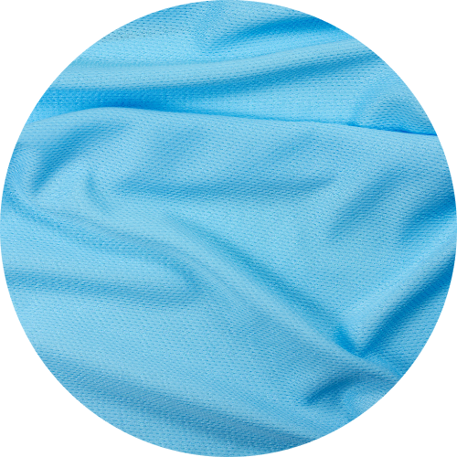

ORGANIC COTTON
Organic Cotton is cotton that is grown organically, without the use of harmful chemicals, leaving soils free from substances that may cause harm.
Organic Cotton is found in a wide range of clothing, footwear, homeware, children, and personal care products, from t-shirts and jeans to towels and bathrobes.
When you choose to shop Organic Cotton, you can save water, energy, and carbon emissions.
PROS
- Low water requirements
- Low energy requirements
- Made from renewable resources
- Chemical control
- No GMO
- No soil erosion
- Biodegradable
CONS
- Smaller yield. Growing organic cotton requires more land
- More expensive to produce and sell